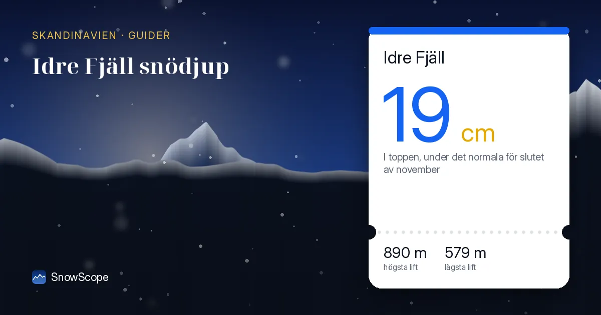

Idre Fjäll snödjup: 19 cm i toppen, under det normala för slutet av november
Idre Fjäll har 19 cm snö i toppen fredagen den 27 november 2026, och de närmaste dagarna kommer nästan ingenting nytt. På 734 m är snödjupet 9 cm, medan 22 cm är normalt för datumet. Säsongen startar alltså på konstsnö, som de flesta år i norra Dalarna.
Se snöprognosen för Idre Fjäll live i SnowScope-appenSnödjup, pudervarningar och 3D-kartan, gratis.
Läget i dag
Det har varit torrt i en vecka: ingen nysnö de senaste tre eller sju dagarna. Fram till måndag den 30 november väntas bara omkring 1 cm. Kylan gör ändå att snön ligger kvar och att snökanonerna kan gå för fullt på nätterna.
Backarna går från 579 m till 890 m på Städjans sluttningar, och anläggningen är en av de största i Sverige till antalet liftar.
Vad är normalt?
Idre ligger i fjällens torrare del, öster om de stora snömagasinen i Norge. En snötäcke på 30 cm brukar komma först runt 7 december på 734 m. Den 8 december är det normalt 29 cm, den 15 december 33 cm.
Den snörikaste vintern på 46 år var 1987-88, med som mest 119 cm. Den magraste var förra vintern, 2024-25, som bara nådde 40 cm.
Jul och nyår
På juldagen ligger det normalt 39 cm på 734 m; en jul av fyra under 30 cm och en av fyra över 47 cm. 50 cm vid nyår nåddes bara i 39 % av vintrarna. Snödjupet brukar vara störst i mars, omkring 64 cm.
Det låter lite, men Idre öppnar varje år med konstsnö i de viktigaste nedfarterna och har ett av de mest pålitliga julprogrammen i Sverige. Naturens snö avgör hur mycket av terrängen och längdspåren som är öppet.
Längdskidor och fjällsnö
För längdåkare är de högre spåren över trädgränsen ofta först med naturlig snö, men de är också mest utsatta för vind. I en torr höst som denna är det konstsnöspåren nära byn som gäller först.
Följ snödjupet i dalen, mitt och topp varje dag på snösidan för Idre Fjäll.
Vanliga frågor
Är alla backar öppna i början av december? Nej, de första veckorna öppnar Idre de nedfarter som har konstsnö, oftast de mest använda familjebackarna och några röda. Resten öppnar när naturen fyllt på.
Hur kallt blir det? Ofta mycket: tidig vinter i Idre betyder ofta flera minusgrader på dagen och kallare på natten. Det är dåligt för den som fryser lätt men perfekt för snökanonerna.
Är förra vinterns usla år ett tecken? Nej. Att 2024-25 var den magraste vintern på 46 år säger inget om i år. Statistiken visar stora skillnader från år till år, och en enda kall vecka med snö från väst kan ge mer än hela november.
Idre jämfört med andra svenska fjäll
Idre ligger i norra Dalarna, söder om Härjedalen, och får ofta mindre snö än orterna närmare norska gränsen. I år har Tänndalen ungefär samma snödjup i toppen. Längre norrut har Åre också en tunn start. Skillnaden mot Norges västkust är stor: där har vissa anläggningar dubbelt så mycket snö som Idre just nu.
För familjer är Idre ändå en av de säkraste orterna i december, eftersom anläggningen satsar mycket på konstsnö och har nära till liftarna från de flesta boenden.
Att boka december
Veckorna före jul är de billigaste av vintern i Idre och passar bra för familjer med små barn som vill åka i lugn och ro på de preparerade backarna. Juleveckan och nyårsveckan är fullbokade tidigt, oavsett snöläge.
För jämförelse med andra fjäll: Tänndalen och Funäsdalsfjällen har ungefär lika mycket snö i dag, medan de norska västfjällen ligger före.
Tips för skidåkare
- Åk de backar som har konstsnö i början av december; naturen hinner sällan före jul här.
- Ta med varma kläder: tidig vinter i Idre betyder ofta kraftig kyla.
- Boka veckan före jul för lägst pris och kortast liftköer.
- Kolla vilka nedfarter som är öppna innan ni åker; de första veckorna är det konstsnöbackarna som gäller.
- Läs mer i Finland mot Sverige: snö i 46 vintrar och på SnowScopes svenska sida.
Om siffrorna
Snösiffror: SnowScopes snökarta och prognos för i dag och vår historik över 46 tidigare vintrar för varje skidort (en uppskattning för området, inte skidortens egen rapport).
Officiella lavinprognoser: Lavinprognoser (Naturvårdsverket)
Citera den här rapporten
För forskning, undervisning eller press: siffrorna och diagrammen får återanvändas fritt under CC BY 4.0 med den här källhänvisningen.
SnowScope (2026), Idre Fjäll snödjup: 19 cm i toppen, under det normala för slutet av november, https://snowscope.app/blog/sv/2026/11/idre-fjall-snodjup-i-dag-slutet-av-november-2026-och-vad-december-brukar-ge.html, hämtad 2026-11-27
SnowScope (Atlas Labs). (2026, November 27). Idre Fjäll snödjup: 19 cm i toppen, under det normala för slutet av november. SnowScope snow reports. https://snowscope.app/blog/sv/2026/11/idre-fjall-snodjup-i-dag-slutet-av-november-2026-och-vad-december-brukar-ge.html
BibTeX
@misc{snowscope2026idrefjallsnodjupidagslut,
author = {{SnowScope (Atlas Labs)}},
title = {Idre Fjäll snödjup: 19 cm i toppen, under det normala för slutet av november},
year = {2026},
month = nov,
howpublished = {\url{https://snowscope.app/blog/sv/2026/11/idre-fjall-snodjup-i-dag-slutet-av-november-2026-och-vad-december-brukar-ge.html}},
note = {Published 2026-11-27 19:09 UTC; accessed 2026-11-27}
}· CC BY 4.0 · Metoder, data och verktyg →
Idre Fjäll: snö och temperatur efter höjd, i vinter jämfört med förra (verktyg) →
Följ Idre Fjäll
Gratis: ett meddelande när nysnö är på väg, och prognosen varje morgon.